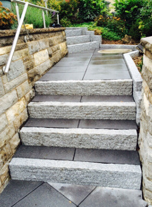
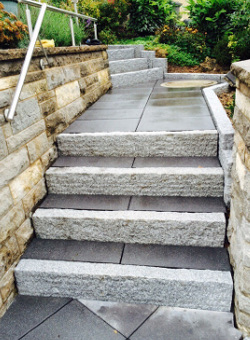

Garten- und Landschaftsbau
 


Herzlich Willkommen bei
Klaus Waldmann Garten- und Landschaftsbau
Ich begrüße Sie auf der Internet-Seite von Klaus Waldmann Garten- und Landschaftsbau, Ihrem Experten
"im grünen Bereich".
Mit unseren innovativen und zeitgemäßen Ideen gestalten wir Gartenanlagen von Privat- und
Geschäftskunden neu.
Auf den folgenden Seiten können Sie sich ein Bild von unserer Firma und ihren Referenzen
machen.
Gerne beraten wir Sie kostenlos und unverbindlich.
Ihr Team Klaus Waldmann Garten- und Landschaftsbau.
Bei Fragen zur ausgeschriebenen Stelle kontaktieren Sie uns bitte. Wir freuen uns auf Ihre schriftliche oder telefonische Bewerbung.